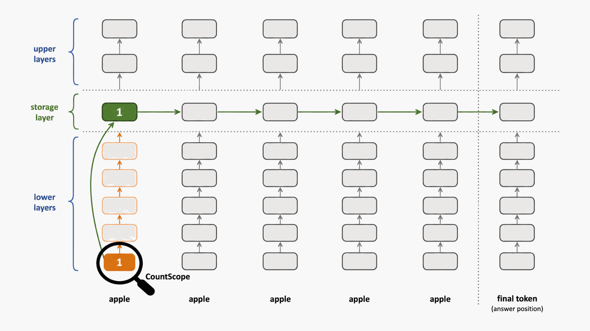
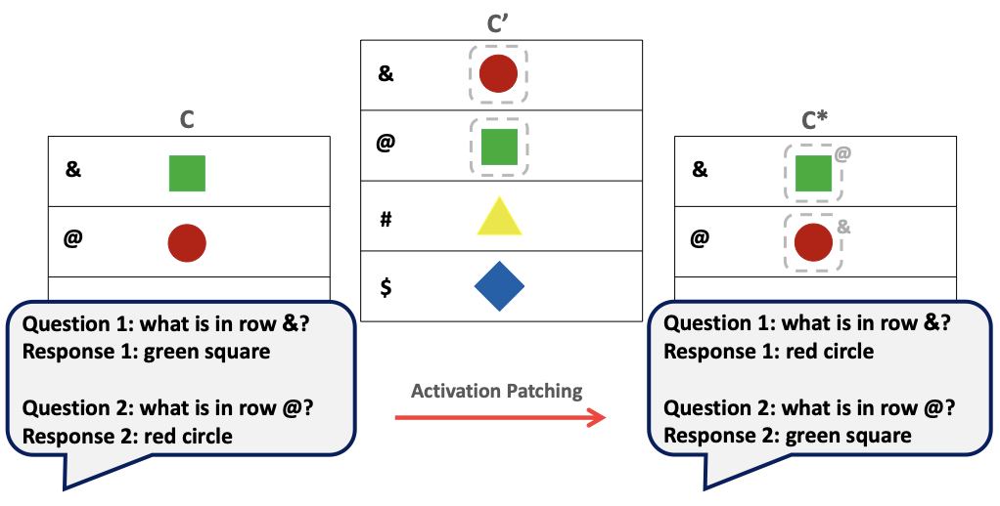
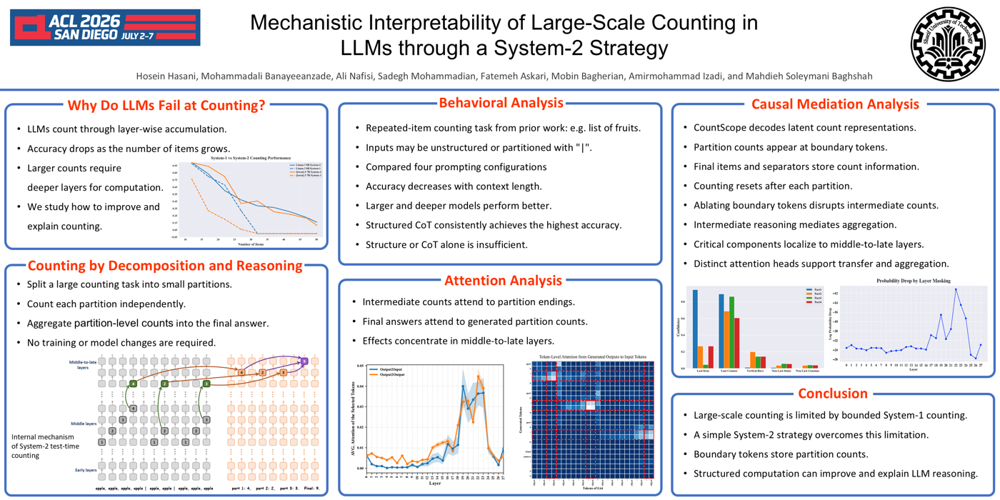

Understanding Counting Mechanisms in Large Language and Vision-Language Models
CVPR 2026
Analyzes how LLMs and VLMs encode and propagate latent count information across layers, tokens, and visual-language contexts.

Research Output
* Equal contribution.
CVPR 2026
Analyzes how LLMs and VLMs encode and propagate latent count information across layers, tokens, and visual-language contexts.

ICML 2026
Studies hidden object identifiers that bind visual objects to external symbols and reshape what multimodal queries retrieve.

Findings of ACL 2026
Uses structured decomposition to study why direct counting breaks at scale and what mechanisms support reliable aggregation.
